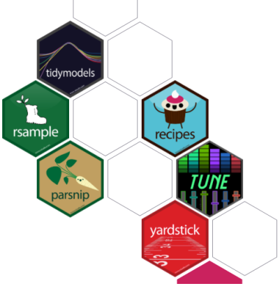

This session will provide a hands-on overview of basic concepts in machine learning, and show how they can be easily implemented in R using the new Tidymodels framework. The Tidymodels framework is a collection of packages for modeling and machine learning using tidyverse principles. We will cover how to build fully reproducible machine learning workflows that are easy to interpret and implement, including key steps such as pre-processing, model fitting and tuning, and model performance evaluation and visualisation.
Nathan is a PhD candidate at the Institute for Data Science and Artificial Intelligence at the University of Manchester. He is writing his thesis on new methods for crowdsourcing spatio-temporal data. Nathan completed his BA in political science at the University of Manchester. His current research interests include citizen science, exploring statistical methodology for new and unconventional forms of data, contemporary debates in philosophy of statistics, open-sourced software (in particular R and Julia languages), communicating uncertainty, and cooking.
Materials
Materials will be made available by Nathan after the workshop! We will post links to the material here.